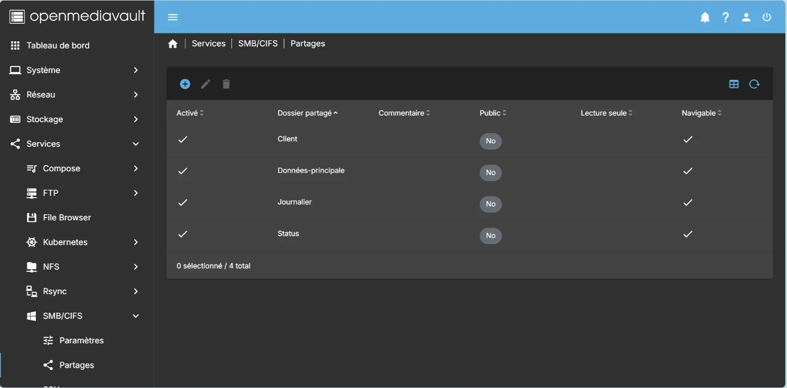
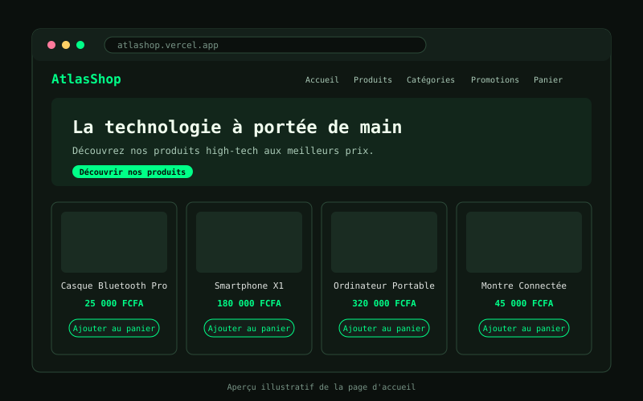
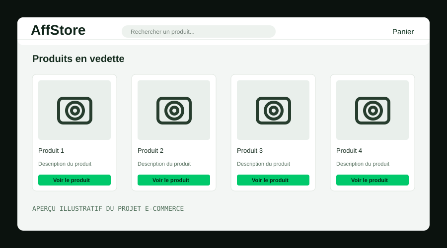

STEVE YONTA
Je m'intéresse à la protection des systèmes informatiques, à l'analyse des menaces et aux technologies permettant de renforcer la sécurité des infrastructures numériques.
À travers mes projets pratiques, j'explore différentes technologies et développe mes compétences en cybersécurité, en administration des systèmes et en développement web.
Mon objectif est de progresser vers une spécialisation en Pentesting et Red Team.
À PROPOS DE MOI
Je suis Steve Yonta, étudiant en génie informatique et passionné par la cybersécurité. Je développe mes compétences en sécurité défensive, en administration des systèmes, en cloud computing et en développement web.
À travers mes projets pratiques, j'explore différentes technologies et cherche à mieux comprendre les menaces, à renforcer la sécurité des systèmes et à construire des solutions utiles.
Honeypots, Wazuh SIEM, Vecteurs d'attaque, Durcissement
TrueNAS ZFS, Linux/UNIX, Routage, Protocoles sécurisés
Instances cloud EC2, Sécurisation des endpoints, VPC
HTML5, CSS3 Moderne, Interfaces web sécurisées & e-commerce
TECHNICAL SKILLS
Domaines d'expertise et outils manipulés en laboratoire de recherche.
CYBERSÉCURITÉ
- > Sécurité défensive
- > Analyse des menaces
- > Honeypot (leurres)
- > Supervision avec Wazuh
- > Analyse d'événements
SYSTÈMES & RÉSEAUX
- > Administration système
- > Services réseau
- > Gestion du stockage NAS
- > Contrôle des accès
- > Surveillance continue
CLOUD COMPUTING
- > Fondamentaux du Cloud
- > Utilisation d'AWS
- > Environnements lab
- > Sécurité infrastructures
- > Surveillance distanciée
DÉVELOPPEMENT WEB
- > HTML5 Sémantique
- > CSS3 Moderne & Layouts
- > Conception d'interfaces
- > Projet e-commerce
- > Ergonomie et performance
PROJETS & RECHERCHES PRATIQUES
Des projets pratiques classés par spécialité : choisissez un domaine pour découvrir les projets correspondants.
> Sélectionnez une spécialité pour afficher les projets correspondants.

HONEYPOT À FORTE INTERACTION
Serveur Linux leurre qui laisse entrer l'attaquant, enregistre toute sa session (ttyrec, auditd) et m'alerte en temps réel sur Telegram. Projet testé de bout en bout : scan Nmap, force brute Hydra, connexion SSH, puis analyse côté serveur.

SERVEUR NAS SÉCURISÉ — OPENMEDIAVAULT
Déploiement d'un serveur NAS pour une PME : stockage centralisé, dossiers partagés SMB, droits par utilisateur, sauvegarde, SSH sur port non standard et tunnel WireGuard pour l'accès distant. Chaque étape est illustrée par des captures réelles.

ATLASSHOP — BOUTIQUE HIGH-TECH EN LIGNE
Boutique high-tech multi-pages en français, avec des prix en FCFA : cinq catégories, promotions, produits populaires avec notes et panier. Le site est en ligne.

AFFSTORE — BOUTIQUE EN LIGNE SUR UNE PAGE
Boutique d'essentiels (électronique, mode, maison) conçue sur une seule page : catalogue avec tri par prix, page produit, panier avec récapitulatif et formulaire de contact. Le site est en ligne.
PARCOURS ACADÉMIQUE ET FORMATIONS
Formations techniques et académiques suivies avec rigueur.
GÉNIE INFORMATIQUE
Études universitaires consacrées aux fondamentaux de l'informatique, à la programmation et aux technologies des systèmes informatiques.
ADMINISTRATION RÉSEAU ET CLOUD COMPUTING
Formation portant sur l'administration réseau et les technologies cloud. Maîtrise des protocoles et déploiement d'architectures.
HACKING ET CYBERSÉCURITÉ
Formation consacrée aux techniques de hacking et aux fondamentaux de la cybersécurité. Étude des vecteurs d'intrusion et de défense.
INITIALISER UNE CONNEXION
Une question, un projet ou une opportunité ? N'hésitez pas à me contacter via terminal ou canal direct.